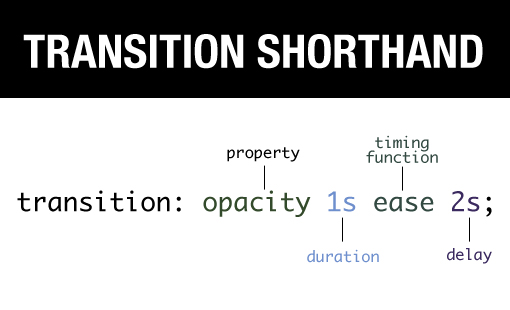

TRANSITIONS -> when eleemnts transition from one state to another, we can alter their appearance. eg: - when hovering over link, changing color. - when img comes into focus, changing size. 4 Transition Properties: - transition-property - transition-duration - transition-timing-function - transition-delay Setting up transitions follows 3 steps: 1 - defining the element. 2 - choosing elements for transition. 3 - defining new values. (must combine these with pseudo-class) 